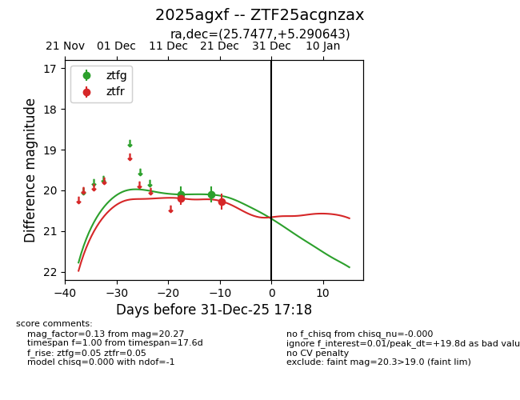
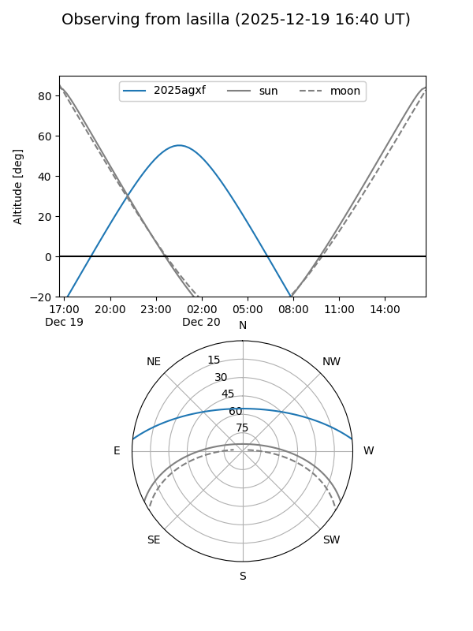
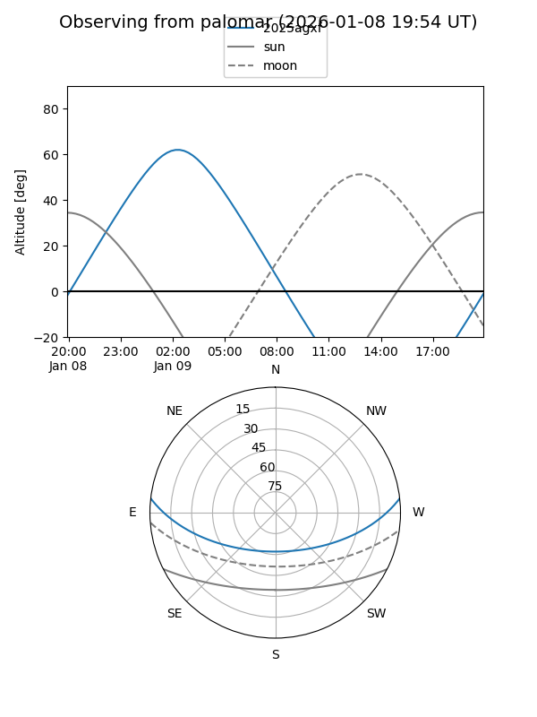

2025agxf
Target 2025agxf at 2026-01-09 12:49
Aliases and brokers:
FINK: link
Lasair: link
ALeRCE: link
TNS: link
YSE: link
alt names
ZTF25acgnzax (ztf,fink_ztf)
2025agxf (tns,yse)
Coordinates:
equatorial (ra, dec) = 25.7477,+5.29064
equatorial (HMS+DMS) = 01:42:59.46,+05:17:26.31
galactic (l, b) = (145.8757,-55.26792)
Flags:
Photometry:
last ztfg=20.10, ztfr=20.27
2 ztfg, 2 ztfr detections
Lightcurve

Visibility


Additional plots